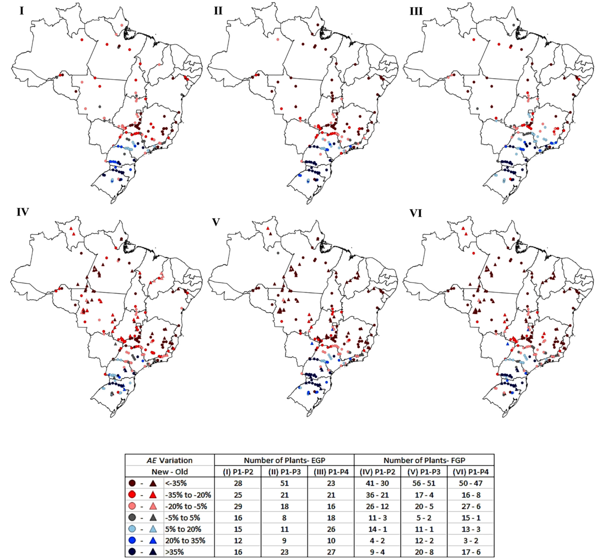

Climate change and hydropower revenues in Brazil
Hydropower investment depends on how much electricity water resources can reliably support. Changes in future water availability can affect individual plants very differently. The analysis estimates how climate projections change the assured energy allocated to each hydropower plant, which supports electricity sales contracts in the market represented by the study.
From climate projections to plant revenues
The analysis links the HadCM3 global climate model to the Eta regional model at 20 km and 40 km resolutions. A rainfall–runoff model converts regional climate conditions into river inflows. Hydrothermal scheduling and a separate firm-energy optimization model then connect those inflows to system generation and individual plant allocations.
The study compares a 1961–1990 reference period with three future periods: 2011–2040, 2041–2070, and 2071–2100. It evaluates both an existing-system configuration with 141 hydropower plants and a planned configuration with 214 plants, including projects that were expected to enter by 2030 when the study was conducted.

Projected changes in assured energy by location. Figure 5 from de Queiroz et al. (2019). Columns compare the three future periods with the reference period. The upper row shows the existing system; the lower row includes planned plants. Colors show percentage changes in assured energy, with reductions concentrated in northern regions and increases at many southern plants.
Uneven impacts across regions
Location matters. Under the modeled climate conditions, many southern plants gain assured energy, while northern and northeastern plants face pronounced reductions. Several changes exceed 35% in either direction.
Expansion can increase exposure. Many planned northern projects are run-of-river plants. Their limited ability to store water makes their output especially sensitive to changes in inflows.
Lower assured energy reduces contracting potential. The paper translates changes in the energy available to support sales contracts into an illustrative revenue assessment using a fixed reference electricity value.
I developed C++ optimization models used to study the national hydropower system and estimate how changes in system operation affect individual plant allocations.
These are conditional scenario results based on HadCM3/Eta and the A1B emissions scenario, not probabilities of future losses. The expansion configuration reflects the plans available at the time, and the monetary assessment uses a fixed 2016 reference value rather than forecasting future electricity prices.